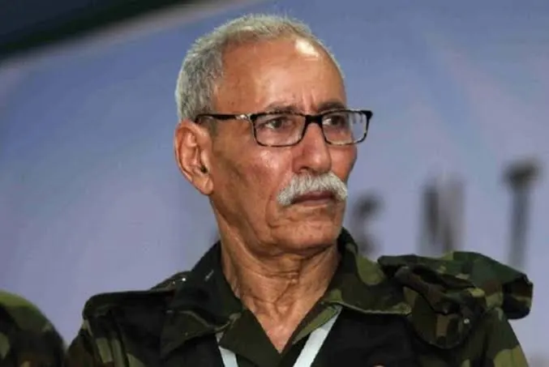

الصحراء الغربية · مجلس الأمن
مينورسو
مينورسو
على طاولة مجلس الأمن
ماذا يحدث قبل 31 أكتوبر؟
اسحب ←
ماذا يحدث قبل 31 أكتوبر؟


بعثة أممية أنشأها مجلس الأمن في أبريل 1991 بمهمتين:
لم يُنظَّم حتى اليوم


في السنوات الأخيرة يجدّد المجلس ولاية البعثة مرة كل عام في أكتوبر.

البوليساريو ترفض وتلوّح بالانسحاب من العملية السياسية إذا اعتُمدت المسودة دون تعديلات جوهرية


الحكم الذاتي تحت سيادته
استفتاء لتقرير المصير
تدعم حق تقرير المصير
الحياد الإيجابي

تجديد الولاية مع تغيير اسم البعثة ومهامها
صيغة توافقية تراعي اعتراضات الأطراف
وقت إضافي للتفاوض
احتمالات ممكنة وليست توقعات.